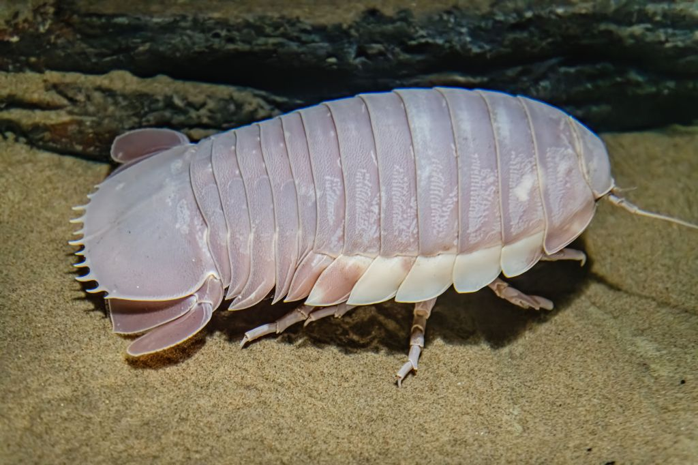

O oceano é um lugar vasto e misterioso, cheio de maravilhas e segredos esperando para serem descobertos. Ele cobre mais de 70% da superfície da Terra e contém 97% da água do planeta. Apesar de sua importância, grande parte do oceano permanece inexplorada e desconhecida.
O oceano é um lugar vasto e misterioso, cheio de maravilhas e segredos esperando para serem descobertos.
Dos coloridos recifes de corais às escuras planícies abissais, há muito o que explorar. O oceano é lar de uma diversidade de vida marinha, desde o menor plâncton até as maiores baleias. Ele desempenha um papel crucial na regulação do clima e dos padrões climáticos da Terra, e fornece alimento e meios de subsistência para milhões de pessoas ao redor do mundo.
Os recifes de corais são alguns dos ecossistemas mais diversos do planeta. Eles abrigam uma grande variedade de vida marinha, incluindo peixes, crustáceos e moluscos. Essas vibrantes cidades subaquáticas não são apenas belas, mas também cruciais para a saúde dos nossos oceanos. Os recifes de corais fornecem habitat e abrigo para muitos organismos marinhos, e ajudam a proteger as costas da erosão e dos danos causados por tempestades.
No entanto, os recifes de corais estão ameaçados por uma variedade de atividades humanas, incluindo a pesca excessiva, a poluição e as mudanças climáticas. O aumento das temperaturas dos oceanos e a acidificação estão causando o branqueamento e a morte dos corais, o que pode ter efeitos devastadores em todo o ecossistema. É importante tomar medidas para proteger e preservar esses valiosos ecossistemas para as futuras gerações.
As planícies abissais são algumas das partes mais profundas do oceano, atingindo profundidades de mais de 6.000 metros. Esses ambientes escuros e frios são lar de criaturas únicas que se adaptaram às condições extremas. Apesar do ambiente hostil, a vida prospera no abismo, mostrando a incrível adaptabilidade dos organismos marinhos.
Os cientistas ainda estão descobrindo novas espécies e aprendendo mais sobre os complexos ecossistemas das planícies abissais. Esses ambientes de águas profundas também são importantes para entender a história do nosso planeta, pois contêm informações valiosas sobre o clima e eventos geológicos passados.
Proteger o oceano é essencial para a saúde do nosso planeta e o bem-estar das futuras gerações. A pesca excessiva, a poluição e as mudanças climáticas são algumas das maiores ameaças ao oceano e seus habitantes. Ao tomar medidas para reduzir nosso impacto no oceano, podemos ajudar a preservar sua beleza e biodiversidade por muitos anos.
Existem muitas maneiras de se envolver na conservação dos oceanos, desde reduzir o uso de plástico e apoiar frutos do mar sustentáveis até participar de limpezas de praias e defender políticas ambientais mais fortes. Cada ação, por menor que seja, pode fazer a diferença na proteção dos nossos oceanos.